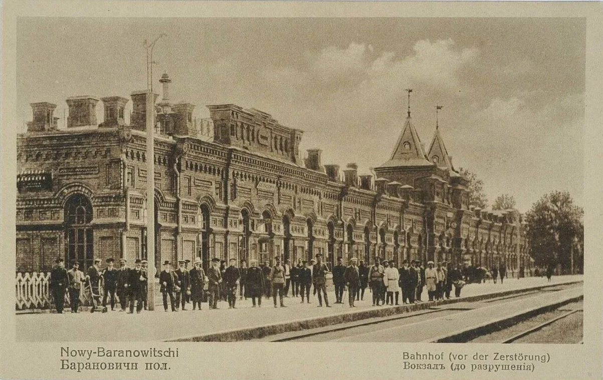
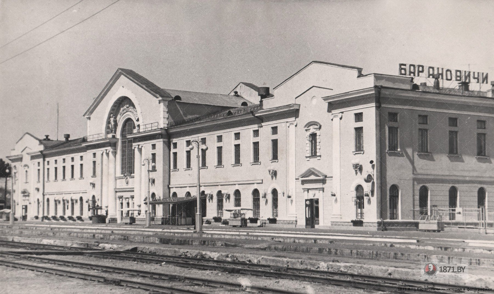
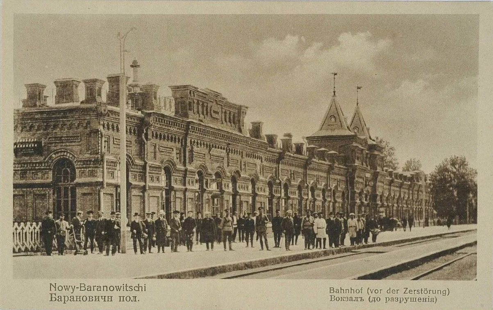
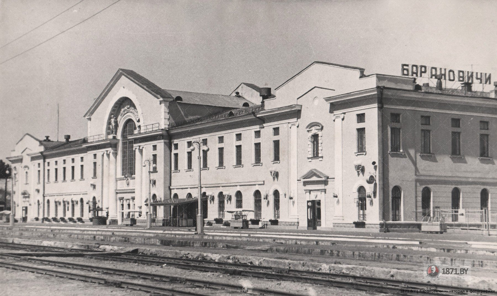

Барановичский полесский железнодорожный вокзал
Сердце транспортной системы города с 1884 года

Сердце транспортной системы города с 1884 года
Барановичский железнодорожный вокзал был построен в 1884 году в связи со строительством Московско-Брестской железной дороги. Именно с открытия станции началась история города — из небольшого посёлка при станции Барановичи вырос крупный промышленный и транспортный центр.
Вокзал играл ключевую роль в экономике региона: через него проходили грузы и пассажиры не только между Москвой и Брестом, но и на Вильно, Лунинец, Пинск. В годы Великой Отечественной войны здание сильно пострадало, но было восстановлено в послевоенные годы.
Адрес: 225409, Республика Беларусь, Брестская область, г. Барановичи, пр. Железнодорожный, д. 1.
Сегодня Барановичский ПВ — один из крупнейших железнодорожных узлов Беларуси. Он обслуживает как пассажирские, так и грузовые перевозки, связывая город с Минском, Брестом, Гомелем, Гродно и другими регионами.
Здание вокзала — образец советской архитектуры середины XX века, неоднократно модернизировалось, но сохранило свою историческую значимость.
 



Если у вас есть старые фотографии или воспоминания, связанные с Барановичским вокзалом, — поделитесь с нами!